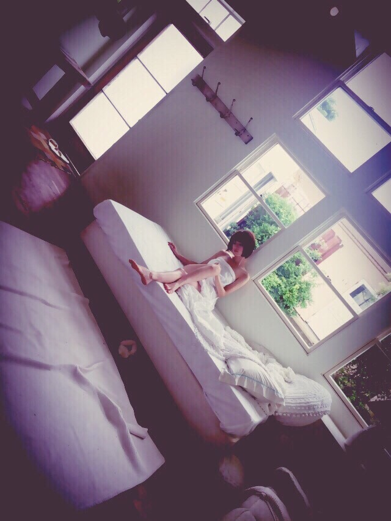
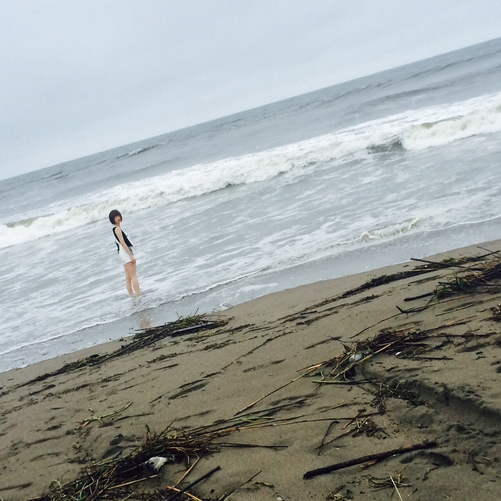
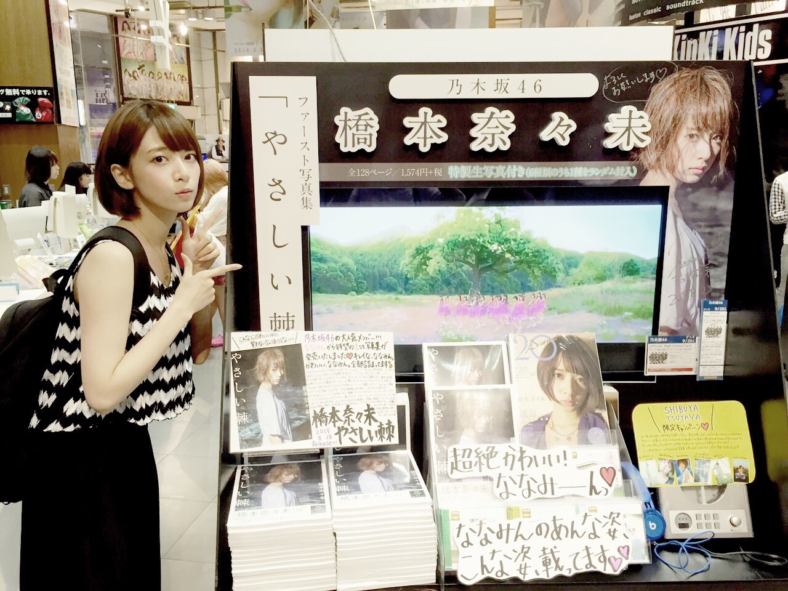

| 2015/08 29 Sat | 写真集とライブ |
写真集、やさしい棘
発売したよーー！！！
思っていた以上の出来上がりでわたしとても嬉しい！！(๑`^´๑)
オフショット


渋谷TSUTAYAさんは、ものすごい展開をしてくれてるの！
渋谷TSUTAYA1Ｆは只今、はしもとななみ祭りだよ～ヾ(｡･ω･｡)
昨日サインしに行ってきたんだー！

見てー！上の吊ってあるフラッグもぜんぶわたしー！( ﾟДﾟ )

すごいよね！ほんとに感謝！！！
しかもね！
写真集でこういうブース作ってくれるの、渋谷TSUTAYA初らしいよ！！！
嬉しいー、、、ありがとうございます（ ｉ _ ｉ ）
こちらの展開は31日までやっています♪
ほんと、打ち合わせから準備、撮影、発売
ずーっと周りの人に恵まれて最高の形でファースト写真集をやり切れたなあと思います！
みんな、ぜひ見てね＼＼\\\\ ٩( 'ω' )و //／／
めっちゃいいものになったよ！！！
ほい！そしてついに！
明日から全国ツアーファイナル～！！
神宮球場～～～～～～～～ウォォォォォォ
仙台名古屋広島福岡大阪来てくれたひと！！
ありがとうありがとう！！！
去年は病気でツアー出れなかったけど、
今年はちゃんと健康に過ごせてます！！！
ちゃんと全公演出れてます！！！
去年のこの時期の記憶は正直ありません
あんまり意識がはっきりしてなかったからかな？ずっとフラフラ寝て過ごしてた
でも今年は、ちゃんと夏を過ごしてる感じがしてる！
しんどいときも、去年ツアーで会えなかったから今年こそは！って会いに来てくれてる人がいる
と思えば全然なんとかなった！笑
ありがとうみんな！！
そしてついについに明日から
去年は立てなかった、神宮球場です、、、
いや、正確に言えば立ちました、一瞬
病み上がりで、挨拶だけするために1分くらいステージに立って挨拶した。それだけでフラフラだった。
その一瞬のあいだにステージから見た景色が去年のわたしにとって衝撃だった
こんな大きなステージでみんなはライブを作ってるのかと
私がフラフラになっている間、1ヶ月もしない間にみんなは着実に進んでいる
ものすごい差をつけられた気がして、
もう追いつけないんじゃないか、もう無理かもしれないと、戻ることをやめようかとも思った
でもそれでもわたしをステージに引き上げてくれたのは周りの人の支えでしかなくて、
特にファンのみんなはいろんな形でわたしの復帰を願ってくれていて、ゆっくり休んで戻ってくるの待ってるよって言葉がたくさん届いて
あー なんもできないわたしだけど、この人たちのために何かしなければならないな と思った
しんどかったけど、それがあったからここまで戻ってこれたなぁと！思います！ありがとう！ウェイ！
今年はバースデーライブで西武ドームという大きいキャパも経験したけど、
わたしにとって夏の神宮はリベンジです！
ここをやりきって、ようやく去年の溝を埋めれる！
がんばるぞ！！！！！
来てくれるみんな、よろしくね！！！！！
あ！来てくれる人は屋外なので体温調節できる格好で！
そして雨が降るかもだから、カッパ必須ね！あと飲み物ね！
盛り上がっていくぞー！！！！
あ、わたし昨日髪染めてね、黒髪になってるけどちゃんと見つけてね！
明日明後日の橋本は茶髪じゃないよ！黒髪ショートですよ！
ではっヾ(｡･ω･｡)
コメント(1740)
2015/08/29 23:48